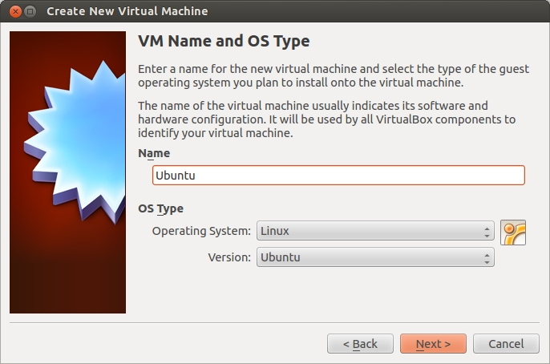

Lab 1: Setting Up Linux and Building Geant4
Learning Objectives
In this lab, you will set up the development environment that the rest of the course depends on. By the end of this session, you will be able to:
- Install Ubuntu Linux in a virtual machine and configure it for productive use
- Install the system libraries required to build Geant4 with Qt visualization support
- Compile Geant4 from source using CMake
- Configure shell environment variables so applications can locate the Geant4 installation
- Verify the installation by inspecting the directory layout and environment
Introduction
In this lab, you will install a Linux operating system in a virtual machine and build Geant4 from source with Qt (visualization) support. Geant4 is a toolkit for simulating ionizing particle interactions with matter — the foundation we will use throughout the rest of the lab series to model detectors, beams, and medical imaging systems.
Prerequisites
- Computer with virtualization support enabled in BIOS/UEFI
- VirtualBox or VMware
- Ubuntu 24 ISO Image
- Internet connection
- At least 50 GB of free disk space and 8 GB of RAM available to the VM
Pre-Lab Questions
- What is a virtual machine, and why are we using one for this course rather than installing Linux on the host machine directly?
- What is the difference between a source distribution of a software package and a binary (pre-compiled) distribution?
- What does CMake do? Why do we configure a build with CMake before running
make? - What is an environment variable, and why does Geant4 ship a script (
geant4.sh) for setting them?
Step 1: Setting Up the Virtual Machine

- Open VirtualBox or VMware.
- Click “New” to create a virtual machine.
- Name your virtual machine and select Linux type/version (Ubuntu).
- Do not use the default VM location (create a new accessible folder instead).
- Copy the ISO file into your chosen accessible folder (e.g., Downloads).
- Select the ISO image file when prompted by VirtualBox.
- Allocate memory (RAM): at least 8 GB.
- Allocate CPU cores (maximum 60% of available cores). Check core count in Windows via
Settings > About Your PC. - Create a virtual hard disk (at least 50 GB recommended).
- Start the virtual machine and boot from the ISO.
- Select “Try or Install Ubuntu” to launch the live session. This boots Ubuntu into a live session, allowing you to test it without affecting the virtual disk.
- From the Linux desktop, click “Install Ubuntu” and follow installation prompts to create a permanent installation.
- After installation, remove the ISO:
- Go to the top menu bar and select
Devices > Optical Drives > Remove disk. (Note: if its greyed out, then it has already been removed automatically). - Restart the virtual machine.
- Log in to your new Ubuntu installation and switch to X11 session at the login screen (click the gear icon).
Step 3: Install Required Packages
Run the following to install the libraries needed to build Geant4 with Qt support:
sudo apt-get install build-essential libexpat1-dev \
libxmu-dev cmake cmake-curses-gui qtbase5-dev qt5-qmakeStep 4: Building Geant4 with Qt and Data

Download Geant4 source code (tar.gz) from https://geant4.web.cern.ch/download/11.3.2.html.
Extract and move the folder (
geant4-v11.3.2) to your home directory.Create a build folder:
mkdir -p ~/geant4build cd ~/geant4buildConfigure Geant4 with CMake:
cmake \ -DCMAKE_INSTALL_PREFIX=/usr/local \ -DGEANT4_INSTALL_DATA=ON \ -DGEANT4_INSTALL_DATADIR=/usr/local/share/Geant4/data \ -DGEANT4_USE_QT=ON \ ~/geant4-v11.3.2Compile using all available processors:
make -j$(nproc)Install Geant4:
sudo make install
Step 5: Post-Installation Setup
Configure library paths:
echo "/usr/local/lib" | sudo tee \ /etc/ld.so.conf.d/geant4.conf sudo ldconfigSet environment variables for Geant4. The Geant4 installer ships a shell script that exports
G4INSTALL,G4LEDATA, and the other variables Geant4 applications need at runtime:source /usr/local/bin/geant4.shYou will need to source this script in every new terminal where you build or run Geant4 code. (You can add
source /usr/local/bin/geant4.shto your~/.bashrcto make it automatic.)
Verification and Analysis
Verify that the environment is set correctly. In the same terminal where you sourced
geant4.sh, run:env | grep G4You should see several lines of output that start with
G4...— for exampleG4INSTALL=/usr/local,G4LEDATAPATH=..., and so on. This confirms the environment variables were exported.If
G4INSTALLis unset, thesourcestep did not run successfully; re-run it before continuing.Navigate to your installation directory and explore the structure:
cd /usr/local ls -R | lessCan you find:
- The
libdirectory containing the libraries? - The
includedirectory with header files? - The
sharedirectory with examples and data files?
- The
Troubleshooting
- If CMake fails, check that all required packages are installed
- If compilation fails with memory errors, reduce the number of parallel jobs (e.g.,
make -j2instead ofmake -j$(nproc)) - If environment variables are not set, ensure you have sourced
geant4.shin your current terminal
Verification Checklist
Before completing this lab, verify you can:
Conclusion
You have successfully set up a Linux virtual machine and compiled Geant4 from source with Qt visualization support. In Lab 2 you will use this environment to build and run your first particle-physics simulation.